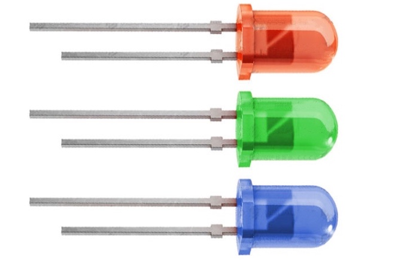
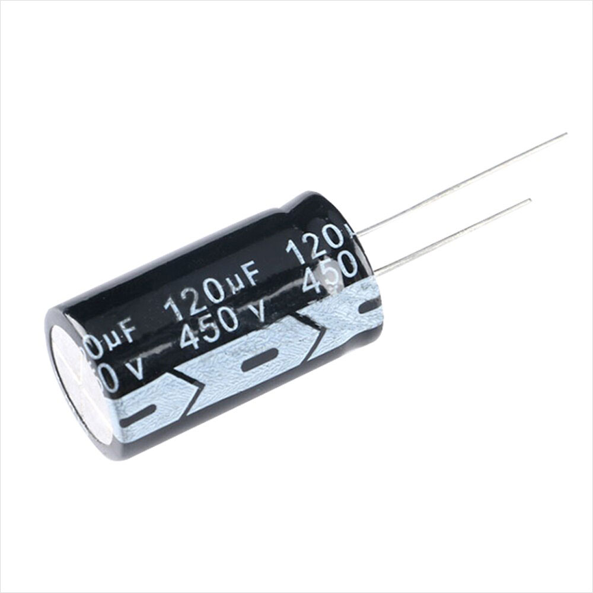
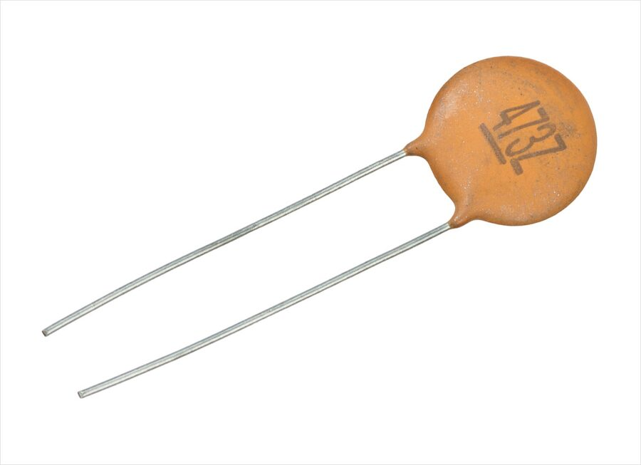
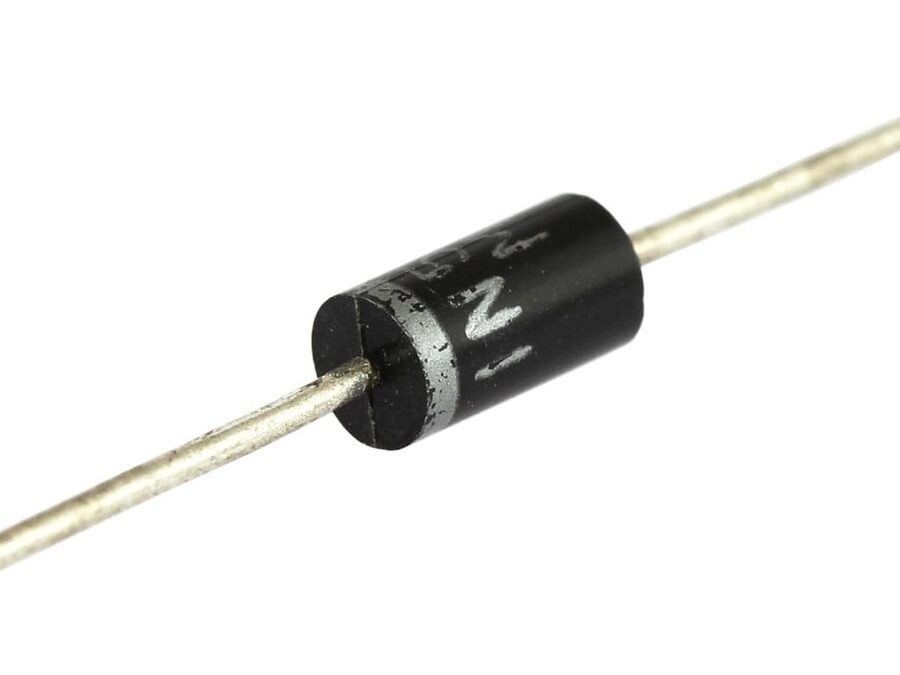
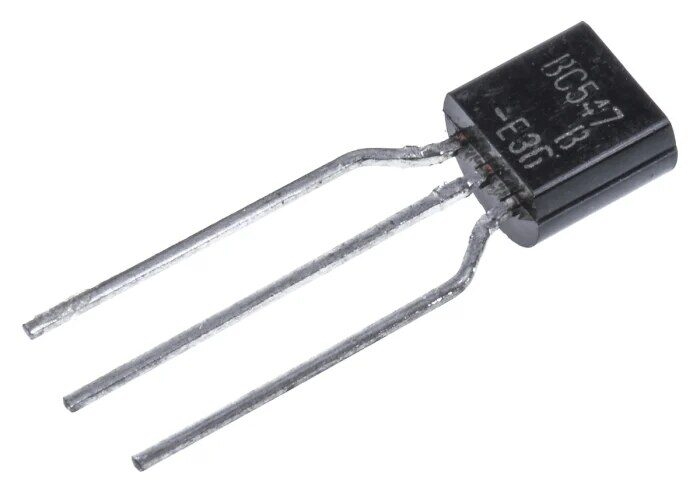
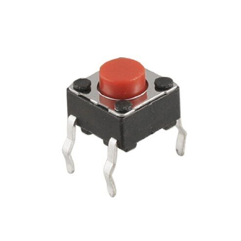
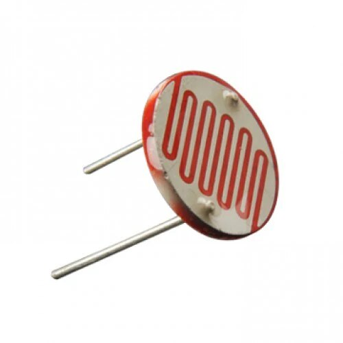

A breadboard only becomes useful once you can recognize the parts going into it. This module gives you a practical field guide to the components students most often confuse: resistors, LEDs, capacitors, diodes, transistors, buttons, and photoresistors. Learn what each one does, how to orient it, and what details to check before power reaches the circuit.
When you pick up an unknown part, ask four questions in order: What family is it?Does polarity matter?What markings or shape give away its value?How should it sit on a breadboard? That simple checklist prevents most beginner mistakes.
1. Identify the body
Cylinder, bead, disk, button, and three-legged package shapes each hint at a different component family.
2. Check polarity
LEDs, electrolytic capacitors, and diodes must face the correct direction. Resistors and most ceramic capacitors do not.
3. Read the marking
Color bands, printed numbers, flat sides, and longer leads all communicate value or orientation.
4. Place with intention
Spread leads across separate rows so the component bridges nodes instead of shorting itself into one strip.
Resistor Color Code Guide
This upgraded analyzer blends our classroom lesson with the best ideas from a modern resistor-band simulator. You can now decode 4-band, 5-band, and 6-band resistors, compare beginner parts with precision parts, and watch the decoded meaning update live.
Most classroom resistors are 4-band parts.
220 Ωdigits 22 × 10tolerance ±5%
Decoded BandsRed • Red • Brown • Gold
Precision NoteStandard classroom resistor
Band Meanings
In 4-band mode the first two bands are digits. In 5-band and 6-band mode the first three bands are digits. The last band is tolerance, and the 6th band adds temperature coefficient in ppm per degree C.
Orientation Tip
The tolerance band is usually spaced a little farther from the other bands. Hold that band on the right while reading from left to right.
Colors
Value
Typical Use
Red, Red, Brown, Gold
220 Ω ±5%
Common LED current-limiting resistor
Brown, Black, Red, Gold
1 kΩ ±5%
Pull-up and pull-down circuits
Yellow, Violet, Orange, Gold
47 kΩ ±5%
Sensor voltage dividers
Brown, Black, Green, Gold
1 MΩ ±5%
High-resistance input circuits
Component Field Guide
These are the parts students meet first on a breadboard. Each one has a recognizable shape and a few orientation rules worth memorizing.
Light Emitting Diode
LED

An LED allows current to flow in one direction and glows when current passes through it. It is a diode designed to emit light.
How to spot it: clear or colored plastic bulb with two leads.
Polarity: longer lead is usually the anode (+), shorter lead and flat edge mark the cathode (-).
Breadboard tip: place each leg in a different row and always use a resistor in series.
Common mistake: reversing the LED or connecting it without a resistor.
Polarized Capacitor
Electrolytic Capacitor

An electrolytic capacitor stores charge and is useful when you need larger capacitance values for smoothing or timing.
How to spot it: cylindrical can with printed stripe.
Polarity: the stripe marks the negative side; the longer lead is often positive.
Breadboard tip: double-check polarity before powering the circuit.
Common mistake: inserting it backwards, which can damage the part.
Non-Polarized Capacitor
Ceramic Capacitor

Ceramic capacitors store small amounts of charge and are often used for filtering noise and stabilizing voltage.
How to spot it: small disk, bead, or tiny rectangular package.
Polarity: none, so either lead can go in either direction.
Marking: printed codes like 104 often mean 100,000 pF = 0.1 uF.
Common mistake: assuming the printed code is in microfarads without converting.
One-Way Current
Diode

A regular diode acts like a one-way valve for current. It is used for rectification, polarity protection, and signal steering.
How to spot it: small cylinder or glass body with a band near one end.
Polarity: the band marks the cathode.
Breadboard tip: think of the band as the side current exits toward in simple diagrams.
Common mistake: mixing up the band direction and blocking current by accident.
Electronic Switch
Transistor

A transistor uses a small signal to control a larger current. It can work as a switch or as an amplifier.
How to spot it: usually a black half-cylinder package with three legs.
Pins: collector, base, emitter or source, gate, drain depending on transistor type.
Breadboard tip: look up the exact pinout for the part number before wiring it.
Common mistake: assuming all three-legged packages share the same pin arrangement.
Momentary Input
Button

A pushbutton opens or closes a connection only while it is being pressed, making it a simple manual input device.
How to spot it: small square tactile switch with four legs.
Internal behavior: two legs on each side are already paired; pressing joins the two sides together.
Breadboard tip: straddle the center gap so the switch bridges two separate halves.
Common mistake: placing all four legs in connected rows so the button appears permanently on.
Light Sensor
Photoresistor

A photoresistor, or LDR, changes resistance based on the amount of light hitting it. More light usually means lower resistance.
How to spot it: round disk face with a zig-zag pattern on top.
Polarity: none.
Breadboard tip: pair it with a fixed resistor in a voltage divider to measure light level.
Common mistake: expecting it to produce voltage by itself instead of changing resistance.
Compare the Parts
Use this table when sorting parts from a mixed electronics kit.
Component
Main Job
Polarity?
What to Notice First
Resistor
Limits current or sets voltage ratios
No
Color bands around a small cylinder
LED
Emits light when current flows
Yes
Long and short legs, flat edge
Electrolytic Capacitor
Stores larger charge, smooths voltage
Yes
Cylindrical can, negative stripe
Ceramic Capacitor
Filters noise, bypasses signals
No
Small disk or bead with a number code
Diode
Allows one-way current flow
Yes
Band marking the cathode end
Transistor
Switches or amplifies current
Pin order matters
Three-legged package and part number
Button
Temporary user input
No, but orientation affects pairing
Four legs in two internal pairs
Photoresistor
Changes resistance with light
No
Round face with zig-zag light-sensitive track
Common Troubleshooting Checks
When a circuit refuses to work, the problem is often not the idea but the orientation of one small part.
LED is dark
Check polarity first, then confirm the resistor is in series instead of accidentally bypassed.
Capacitor heats up
Power off immediately and check whether an electrolytic capacitor is reversed.
Button always reads pressed
The switch is probably rotated the wrong way or sitting in one connected breadboard strip.
Sensor reading is unstable
Make sure the photoresistor is part of a voltage divider and that both legs are firmly seated.
Transistor does nothing
Verify the part number and exact pinout; the flat face alone is not enough to guarantee pin order.
Current will not pass
Check diode orientation. A single reversed diode can block the whole branch.
Quick Check
1. On a four-band resistor, what do the first two color bands represent?
2. What marking most clearly identifies the negative side of an electrolytic capacitor?
3. Why does the band on a diode matter?
4. What changes when a photoresistor is exposed to more light?